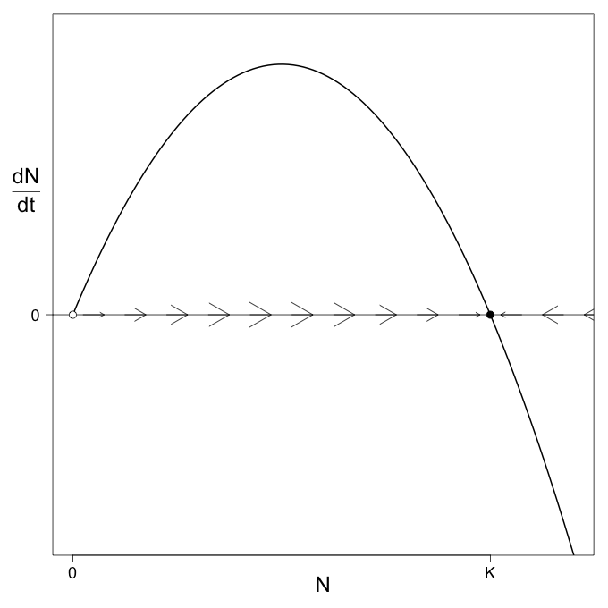
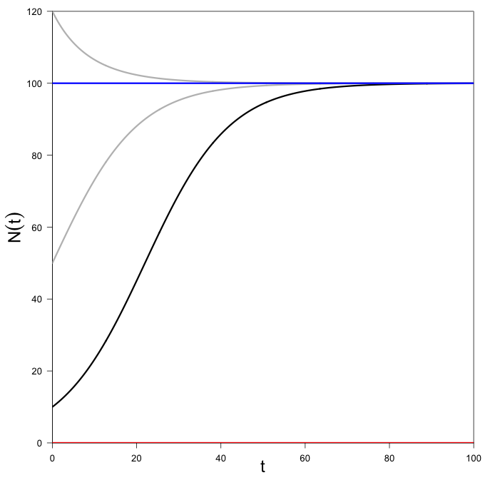
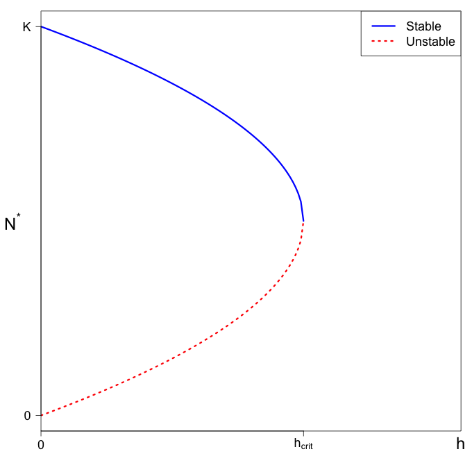
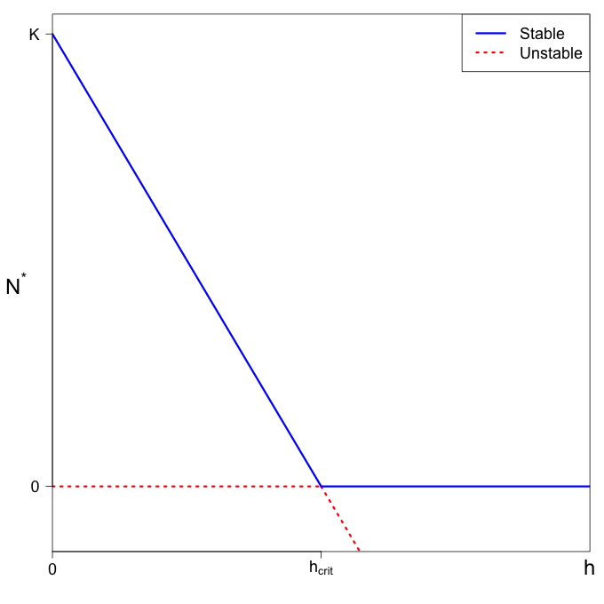

Section 1.2 Single differential equation models
We begin with a few traditional (and a few not so traditional) population models in the form of single differential equations. This provides an opportunity to introduce some modeling ideas and to practice some techniques from calculus and differential equations.
We will often use three related graphs: the phase line diagram (a plot of the derivative against the function value), the solutions (a plot of the value against time), and a bifurcation diagram (a plot of the equilibrium against a parameter of interest).
Subsection 1.2.1 Logistic growth
The logistic growth equation
\begin{equation*}
\dfrac{dN}{dt} =
rN\left(1-\frac{N}{K}\right)
\end{equation*}
is often used as a model to describe how the population (density) of some organism changes over time. The model contains two parameters \(r\) and \(K\) that describe properties of the organism under consideration. The parameter \(r\) describes the intrinsic growth rate of the organism, while \(K\) describes the carrying capacity. The intrinsic growth rate, \(r\text{,}\) is the difference between natural birth and death rates,
\begin{equation*}
r = b - m,
\end{equation*}
for birth rate \(b\) and death rate \(m\text{.}\) The carrying capacity, \(K\text{,}\) reflects the expected population size in a given environment.
Analysis of the logistic growth model.
While this model can be integrated using common calculus techniques, that formula, while impressive, isn’t actually all that interesting. In part because as models become more complicated, we are often unable to find exact solutions. Instead we will apply a mix of qualitative (i.e., descriptive) methods along side a few more detailed analytical methods.
We refer to the right-hand side of the differential equation is the rate function and use intuition from calculus to learn about solutions to the model. As a function of \(N\text{,}\) the rate function is \(f(N) = rN\left(1-\frac{N}{K}\right)\text{,}\) whose graph is a concave down parabola with zeroes at \(N=0\) and \(N=K\text{.}\) This is our first breakthrough.
Where the right-hand size is exactly zero, the derivative is also zero. This means a population that starts at either number will never change. We call locations like these equilirbium points or equilibria of the model. These are helpful reference points when describing solutions to the model. Elsewhere, we look at the graph of the rate function to determine if it, hence the derivative, is positive or negative. Where the rate function is positive, the derivative is postitive, and our solution increases. Where the derivative is small, the solutions increase slowly and where the derivatgive is large, the solutions increase quickly. Where the derivative is negative, the solution decreases. If the derivative is negative and small in magnitude, the decrease is slow. If the derivative is negative and large in magnitude, the decrease is fast.
We can turn this into a qualitative, graphical method of studying solutions to this and many other models. We call the tool a phase line diagram, and give a finished example in the Figure 1.2.1. In this example, the direction of arrow points to the right if the value of the rate function (i.e., derivative) is positive at that value of the model variable. We like to roughly scale the size of the arrow by the height of the function to indicate of the increase in value is fast or slow. In contrast, where the rate function is negative, we draw arrows to the left. This indicates that the solution decreases.

Since negative populations are not biologically interesting, we tend to ignore that direction. But you may notice in Figure 1.2.1 that there is an "empty" circle at the value of \(N^* = 0\) and a "filled" circle at the value of \(N^*=K\text{.}\) We use this to indicate that \(N^* = 0\) is unstable, in the sense that it repels solutions away from it (in this particular case, at least in the positive direction which is all we are interested in). Additionally, we cay that \(N^* = K\) is stable, in the sense that it draws in all "nearby" solutions. In addition to the graphical analysis, we can also study this computationally.
What’s left is to consider what solutions against time might look like, as in, a graph whose vertical axis is \(N(t)\) and whose horizontal axis is \(t\text{.}\) According to Figure 1.2.1, if we started at a small initial population just above zero, the population would slowly increase at first, but then start to increase faster and faster as the population size moved towards the peak of the rate function. In this phase, the graph would be concave up and resemble an exponential. Once the population size got bigger than the value where the rate function peaks, the increase would slow, resulting in a change in concavity of the solution. The graph would take on a "sigmoidal" or "S-shape". A population starting just below \(K\) would slowly increase towards that same horizontal asymptote at \(N =
K\text{.}\) Solutions starting far above \(K\) would quickly decrease at first, but would slow down and approach the asymptote from above (again looking almost exponential).

Solutions starting from initial conditions below \(\frac{K}{2}\) will always have the sigmoidal shape of the black curve in Figure 1.2.2. Solutions starting between \(\frac{K}{2}\) and \(K\) will look similar to the gray curve that approaches the horizontal asymptote at \(N=K\) from below, and solutions starting above \(K\) will always look like the curve approaching the asymptote at \(N = K\) from above.
Aside from talking in more detail about parameter values in specific applications, there isn’t much more to say here. Along those lines, however, changing \(K\) raises or lowers the horizontal asymptote that guides our solutions and changing \(r\) increases or decreases the speed at which solutions approach (or leave) equilibria. Next we will consider modifications to this model that address how we might harvest from a population.
Stability analysis motivated by the logistic growth model.
For the remainder of this section, we will study the logistic growth equation and variations. The logistic growth equation is given by,
\begin{equation*}
\frac{d^{}
{N}}{d {t}^{}}=rN\Big(1-\frac{N}{K}\Big).
\end{equation*}
Let \(N^*\) be an equilibrium point, so that we can write \(N(t)=N^*+n(t).\) We will derive a stability condition for an arbitrary equilibrium point, starting by identifying the dynamics of \(n(t)\text{,}\)
\begin{equation*}
\begin{aligned}
\frac{d^{} {N}}{d {t}^{}}&=\frac{d^{} {}}{d
{t}^{}}\Big(N^*+n(t)\Big)\\ &=0+\frac{d^{} {n}}{d
{t}^{}}.\end{aligned}
\end{equation*}
Now, substituting the formula for \(N(t)\) and expanding,
\begin{equation*}
\begin{aligned} \frac{d^{} {n}}{d {t}^{}}&=
\frac{d^{} {N}}{d {t}^{}}\\ &=r(N^*+n)\Big(1-\frac{N^*+n}{K}\Big)\\
&=rN^*\Big(1-\frac{N^*+n}{K}\Big)+rn\Big (1-\frac{N^*+n}{K}\Big)\\
&=\cancel{rN^*\Big(1-\frac{N^*}{K}\Big)}
-\frac{rN^*n}{K}+rn\Big(1-\frac{N^*}{K}\Big) -\cancel{\frac{rn^2}{K}}\\
&=r\Big(1-\frac{2N^*}{K}\Big)n\\ \frac{d^{} {n}}{d {t}^{}}&=
f'(N^*)n\end{aligned}
\end{equation*}
In the last step we can see that the terms that remain are equivalent to the derivative of \(f(N)\text{,}\) with respect to \(N\) evaluated at \(N^*\text{.}\) Here we linearize by substituting our formula for the solution and dropping al higher order terms in \(n(t)\text{.}\) You could do this, more formally or generally, by Taylor series.
Solutions to
\begin{equation*}
\frac{d^{} {n}}{d {t}^{}}= f'(N^*)n
\end{equation*}
decay to zero if \(f'(N^*)<0\) and grow if \(f'(N^*)>0\text{.}\) Hence, an equilibrium point \(N^*\) (trivial or not) is stable if \(f'(N^*)<0\) and unstable if \(f'(N^*)>0\text{.}\)
Evaluating derivatives should work in general, but it is not our only tool. Today we will use graphical methods to develop a qualitative understanding of the dynamics of a harvested population. If we think about what our model means, we can make progress without tackling sometimes frustrating, other times uninspiring, algebra.
Subsection 1.2.2 Logistic growth with constant harvesting
With a slight modification to the logistic growth equation
\begin{equation*}
\dfrac{dN}{dt} =
rN\left(1-\frac{N}{K}\right)
\end{equation*}
we can study the impact of a single, relatively simple term on the analysis and the outcome. We use
\begin{equation*}
\dfrac{dN}{dt} = rN\left(1-\frac{N}{K}\right) - h
\end{equation*}
with harvesting rate \(h\text{.}\) We will imagine the parameters \(r\) and \(K\) as being out of our control, but \(h\) as being something we might hope to control.
A common approach is to draw and analyze phase lines, compute equilibria, sketch sample solutions, assess stability analytically, verify that everything makes sense, and summarize what we learned with a bifirucation diagram. It sometimes helps with one step to do another in parallel, for example, the equilibria are relevant to the phase plane.
Phase line analysis of the constant harvesting model.
The right-hand side of the differential equation is
\begin{equation*}
f(N) =
rN\left(1-\frac{N}{K}\right) - h,
\end{equation*}
a quadratic function of \(N\text{.}\) This is similar to the phase line for the regular logistic growth model, but as \(h\) grows, the parabola is shifted down.
The solutions below are computer-generated, but resemble nicer versions of sketches we could make ourselves from the information in the phase lines in Figure 1.2.4. Notice how the equilibrium that had been fixed at \(N^* = 0\) now shifts upward as \(h\) grows, this suggests small initial populations, that once grew in the absense of harvesting, are now driven to extinction. Once the equation reaches \(N(t) =0\text{,}\) that solution really stops making biological sense. In fact, it sometimes gets worse as those solutions are essentially growing exponentially (but negative) and can cause computational problems of minor importance but major annoyance.
An important observation from the graphs in Figure 1.2.4 is that the smaller equilibrium establishes a minimum population size, below which all populations will be driven to extinction by harvesting. Sadly, but somewhat unsurprisingly, this minimum increases with \(h\text{.}\)
Equilibrium analysis of the constant harvesting model.
We can, and sometimes must, confirm graphical results by complementing them with analysis. The right-hand side of the differential equation is
\begin{equation*}
f(N) =
rN\left(1-\frac{N}{K}\right) - h,
\end{equation*}
a quadratic function of \(N\text{.}\) We cannot factor, and instead can only rely on the quadratic formula - it could be worse, but it’s not great. To get anywhere in the next step, it’s helpful to expand the quadratic to
\begin{equation*}
f(N) = -\frac{r}{K}N^{2} +
rN - h\text{.}
\end{equation*}
From there we apply the quadratic formula,
\begin{align*}
N^* \amp = \dfrac{-r \pm \sqrt{r^{2} -
4(-\frac{r}{K})(-h)}}{2(-\frac{r}{K})}\\
\amp =
\dfrac{-r}{-\frac{2r}{K}} \pm \frac{\sqrt{{r^2} -
\frac{4rh}{K}}}{-\frac{2r}{K}}\\
\amp = \dfrac{K}{2} \mp
\frac{\sqrt{\frac{4r^2}{K^2}\left(\frac{K^2}{4} -
\frac{hK}{r}\right)}}{\frac{2r}{K}}\\
N^*\amp = \dfrac{K}{2}
\mp \sqrt{\frac{K^2}{4} - \frac{hK}{r}}
\end{align*}
For real-valued solutions we need \(\frac{K^2}{4} - \frac{hK}{r} \gt
0\) or \(\frac{rK}{4} \gt h\text{,}\) in words, \(h\) must be small. When \(h = 0\text{,}\) the equilibria are \(N^*=0\) and \(N^* = K\) (consistent with the basic logistic growth model). When \(h =
\frac{rK}{4}\text{,}\) the equilibria collide at \(N^*=\frac{K}{2}\text{.}\) In between, equilibria are described by the upper and lower halves of a sideways parabola that shares these three points in common.

Subsection 1.2.3 Logistic growth with proportional harvesting
Admittedly, that last section was kind of a nightmare, and the change we are about to make might convince you things are only going to get worse. Stick with me. It gets better.
You may have noticed some potential drawbacks of constant harvesting. Chiefly, driving small populations to extinction is probably not a good thing. Instead of a constant harvesting rate, we will now take the term to be porportional to population density, that is
\begin{equation*}
\dfrac{dN}{dt} = rN\left(1-\frac{N}{K}\right) - hN\text{.}
\end{equation*}
Again, that is a more complicated term than before, but the analysis will go much more smoothly.
Phase line analysis of the proportional harvesting model.
The right-hand side of the differential equation is
\begin{equation*}
f(N) =
rN\left(1-\frac{N}{K}\right) - hN,
\end{equation*}
a quadratic function of \(N\text{.}\) This is similar to the phase line for the regular logistic growth model, but as \(hN\) grows, the parabola is again altered. Despite the model looking more complicated than in the previous section, the analysis proceeds more smoothly.

The solutions below are computer-generated, but resemble nicer versions of sketches we could make ourselves from the information in the phase lines in Figure 1.2.6. In contrast to the solutions in Figure 1.2.7, here the trivial equilibrium at \(N^* = 0\) remains fixed and the nontrivial equilibrium \(N^* = K\left(1-\frac{h}{r}\right)\) decreases linearly as the proportional harvesting rate \(h\) increases. For \(h\) exceeding \(r\text{,}\) the nontrivial equilibrium is negative and is both unstable and biologically meaningless. In this situation, all poplations will go to extinction at the trivial equilibrium \(N^*=0\text{,}\) which becomes stable.
Equilibrium analysis of the proportional harvesting model.
We can, and sometimes must, confirm graphical results by complementing them with analysis. The right-hand side of the differential equation is
\begin{equation*}
f(N) =
rN\left(1-\frac{N}{K}\right) - hN,
\end{equation*}
a quadratic function of \(N\text{.}\) This is similar to the equation for the regular logistic growth model, but as \(hN\) grows, the parabola is again altered. Despite the model looking more complicated than in the previous section, the analysis proceeds more smoothly.
Our equilibrium condition highlights the special value of \(N\) which we call \(N^*\text{,}\) so we have \(f(N^*) = 0\text{,}\) or
\begin{equation*}
rN^*\left(1-\frac{N^*}{K}\right) - hN^* = 0.
\end{equation*}
First, we can factor the right-hand side as
\begin{equation*}
0 =
\left(r\left(1-\frac{N^*}{K}\right) - h\right)N^*\text{.}
\end{equation*}
From there we get the trivial equilibrium \(N^* = 0\) and the nontrivial equilibrium \(N^* = K\left(1-\frac{h}{r}\right)\) which solves
\begin{equation*}
r\left(1-\frac{N^*}{K}\right) - h = 0.
\end{equation*}
This should make some sense intuitively - if we set \(h = 0\text{,}\) our model reduces to the logistic growth model without harvesting. Notice that with \(h=0\text{,}\)
\begin{equation*}
N^* = K\left(1 - \frac{0}{r}\right) = K
\end{equation*}
First, we can factor the right-hand side as
\begin{equation*}
0 =
\left(r\left(1-\frac{N}{K}\right) - h\right)N\text{.}
\end{equation*}
Stability analysis of the proportional harvesting model.
The stability of an equilibrium is determined by the sign of the derivative of right-hand side of the differential equation when evaluated at the equilibrium. Here the right-hand side is
\begin{equation*}
f(N) =
rN\left(1-\frac{N}{K}\right) - hN,
\end{equation*}
a quadratic function of \(N\text{,}\) so the derivative, with respect to \(N\) is
\begin{equation*}
f'(N) =
\dfrac{d}{dN}\left(rN\left(1-\frac{N}{K}\right) - hN\right) =
r-\frac{2rN}{K}-h\text{.}
\end{equation*}
At \(N^*=0\text{,}\)
\begin{equation*}
f'(0) = r-h\text{.}
\end{equation*}
At \(N^*
= K\left(1-\frac{h}{r}\right)\text{,}\)
\begin{equation*}
f'\left(K\left(1-\frac{h}{r}\right)\right) =
r-\frac{2rK\left(1-\frac{h}{r}\right)}{K}-h = h-r\text{.}
\end{equation*}
When \(r \gt h\text{,}\) \(f'\left(K\left(1-\frac{h}{r}\right)\right) =
h-r \gt 0\) and the nontrivial equilibrium is stable, while \(f'(0) =
r - h \gt 0\) and the trivial population is stable. The population equilibrates to some positive number when harvesting is week. In the extreme, when \(h = 0\text{,}\) there is no harvesting and the model is equivalent to the logistic model in terms of equilibria and stability. Otherwise, for \(h \gt r\text{,}\) signs and stability are reversed and all positive initial conditions lead to extinction.
